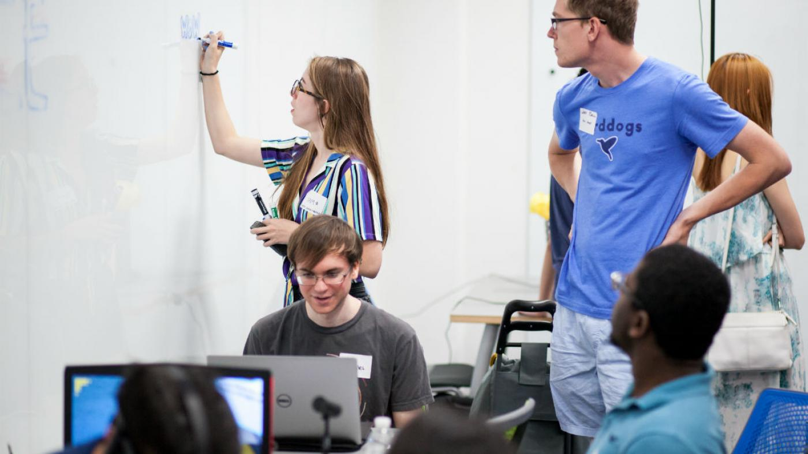

What is Arts and Entertainment Technology (AET)?
Arts and Entertainment Technologies (AET) is the first Bachelor of Science degree offered by the College of Fine Arts in the School of Design and Creative Technologies at The University of Texas at Austin. In this interdisciplinary major, creative expression merges with technological innovation. AET foundational courses deliver creative coding fundamentals, an introduction to a wide range of creative production software and a colloquium series of guest speakers. Students advance to projects-based coursework drawn from four emphasis areas: Game Design; Digital Visualization; Performance, Lighting and Interactivity (PLAI); and Music and Sound.